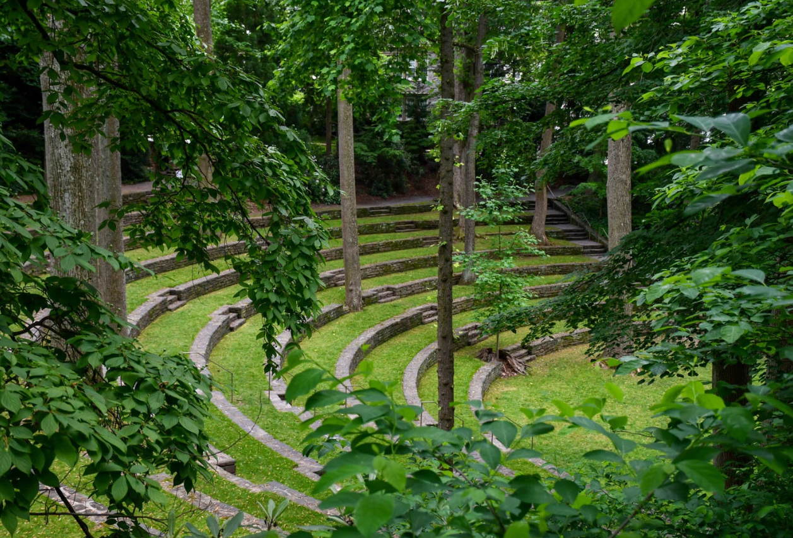

Nakao Scientific Computing and Research at Swarthmore (NaSCaRS)

The Scott Amphitheater (photo credit: Meristem Horticulture)
Welcome to Dr. Joseph Nakao's research lab (NaSCaRS) at Swarthmore College! The NaSCaRS group focuses on developing efficient structure-preserving numerical solvers for partial differential equations. Our projects include Eulerian-Lagrangian/semi-Lagrangian methods, rank-adaptive methods, and high-order discretizations. We are interested in the broad range of applications where high-dimensional partial differential equations appear, particularly related to fluid and kinetic dynamics.
We gratefully acknowledge the generous funding support from Swarthmore College.
Interested in joining the NaSCaRS group? See the "Contact" page for more details.
News and Announcements
(October 2026, upcoming) Several NaSCaRS students will be presenting their research at the upcoming SIAM NNP26 conference!
(August 2026) We just submitted our paper on an adaptive and conservative low-rank solver for the hybrid Vlasov-Fokker-Planck equation. This is Dylan's first co-authored paper!
(May 2026) We welcome the two newest members of the NaSCaRS group: Max Wheeler and Kaden Cho.
(May 2026) Dylan is returning to the U.S. Naval Research Laboratory as a summer research intern.
(May 2026) Paolo is heading to Los Alamos National Laboratory as a summer research intern.
(May 2026) Joost is heading to JP Morgan Chase for a summer internship.
(April 2026) Our low-rank paper for 3D convection-diffusion equations was published in Computer Physics Communications.